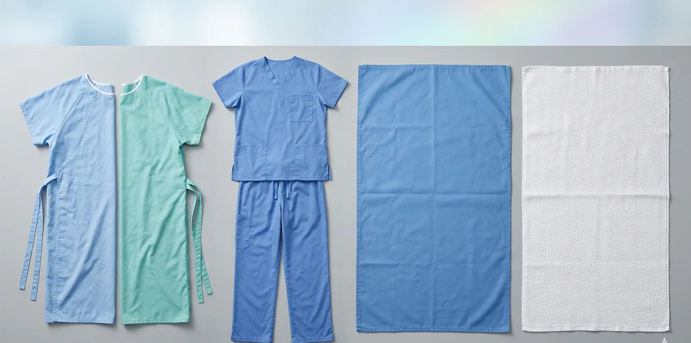
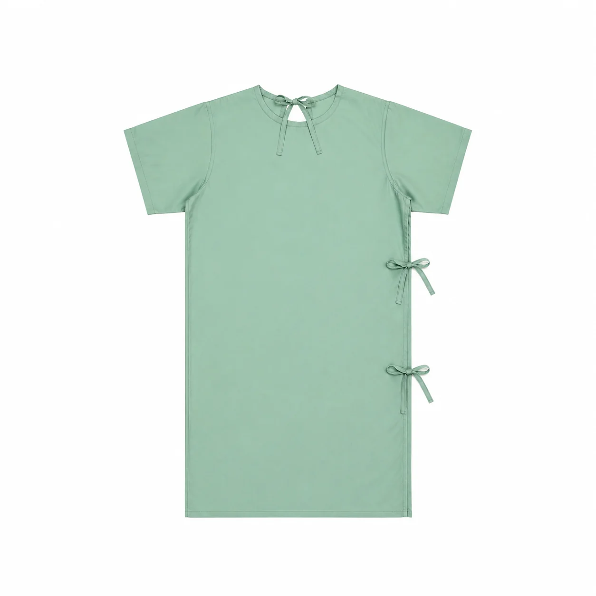
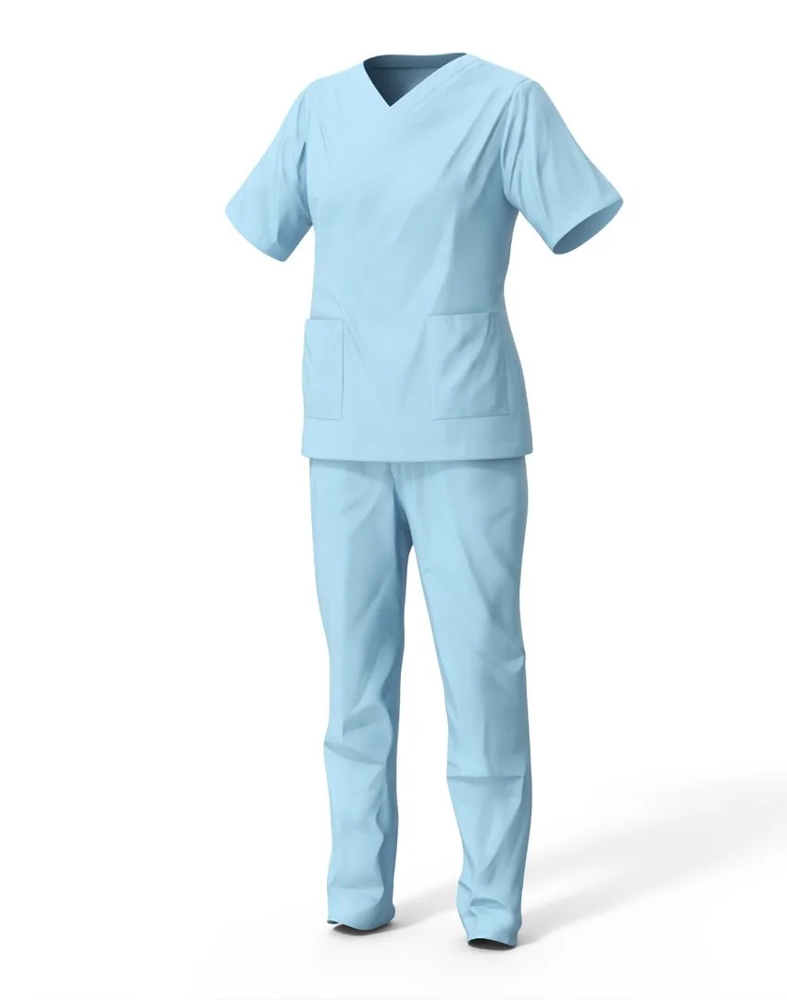
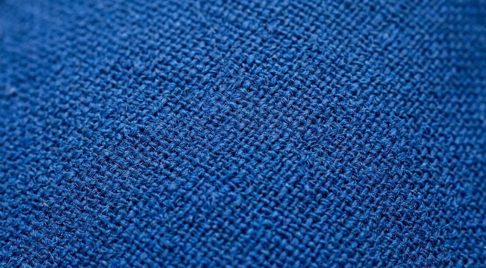
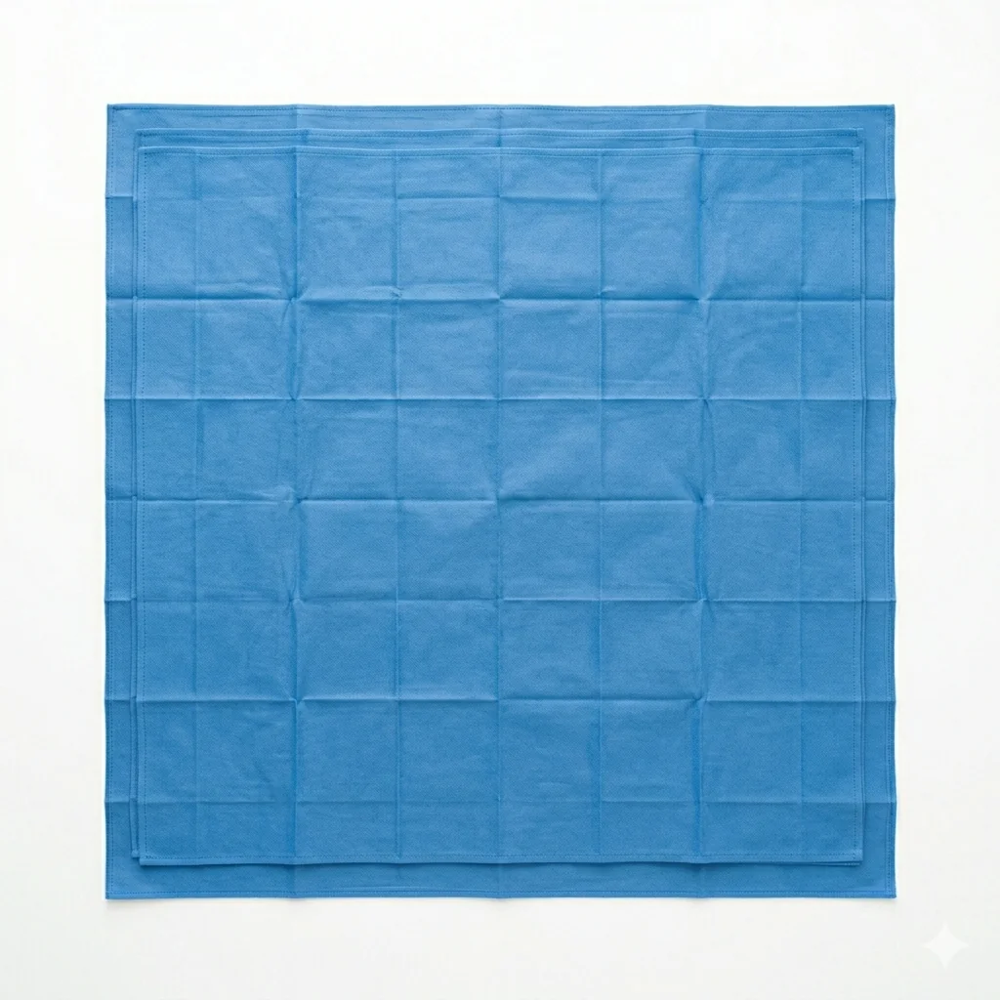
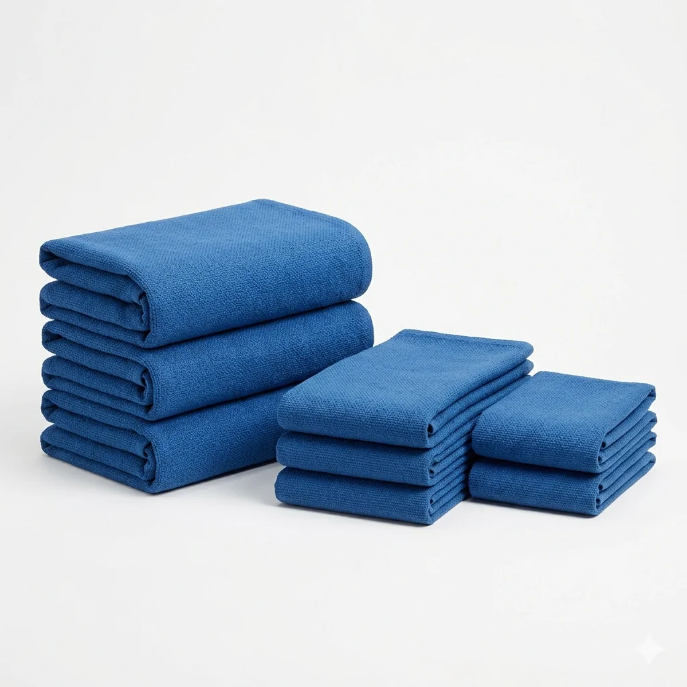

Loading...
Loading...

HEALTHCARE TEXTILE SOLUTIONS
We manufacture and source high-performance healthcare textiles designed for hospitals, distributors, and institutional buyers — combining durability, hygiene compliance, and consistent bulk supply across global markets.
Request Product Catalog →Professional scrubs, gowns, and uniforms designed for medical staff performance.
Comfortable and hygienic patient wear for hospitals and care facilities.
Durable daily-use scrubs engineered for repeated industrial washing.
Sterile drapes and protective fabrics meeting medical-grade standards.
Lint-free, highly absorbent towels ideal for surgical and cleaning applications.
Category
Doctor & Surgical Wear
Performance Standard
Hospital Grade Fabric
MEDICAL TEXTILE SOLUTION
Our doctor and surgical wear is engineered for healthcare environments where hygiene, safety, and performance are non-negotiable. Designed with advanced fabric engineering, it ensures durability, comfort, and compliance with global medical standards.
Designed for sterile and controlled hospital environments
High durability fabric suitable for repeated industrial washing
Skin-safe textile engineered for long working hours comfort
Optimized for hospital hygiene and infection-control protocols
PATIENT CARE TEXTILES
Designed for hospitals and care facilities, our patient gowns balance dignity, hygiene, and operational practicality with hospital-grade textile engineering.
Fabric Standard
Medical-Grade Soft Cotton Blend
Usage Environment
Hospitals • Clinics • Recovery Units
Performance
High Wash Durability & Color Stability
Our patient gowns are developed with a focus on ease of use for medical staff and comfort for patients during extended hospital stays. The design ensures accessibility during examinations while maintaining patient dignity.
Ergonomic open-back design for medical accessibility
Soft-touch fabric optimized for sensitive skin and long-term wear
Industrial wash resistance for repeated hospital laundering cycles
Lightweight construction for patient mobility and recovery comfort

Application
General Ward • ICU • Surgical Recovery
PROFESSIONAL MEDICAL APPAREL
Engineered scrub systems for healthcare professionals — combining hygiene performance, ergonomic fit, and long-lasting industrial durability.

CLINICAL PERFORMANCE WEAR

FABRIC DETAIL
Breathable Medical Textile
HOSPITAL USE
Clinical Team Uniform System
Engineered for long shifts and active clinical movement.
Fabric designed for infection-controlled environments.
Withstands repeated hospital-grade washing cycles.
STERILE & CLINICAL TEXTILES
Engineered for sterile environments, operating rooms, and infection-controlled workflows where precision, absorption, and safety define performance.

SURGICAL TEXTILES
High-barrier surgical fabrics designed for operating rooms and sterile procedures. Engineered for contamination control and fluid resistance.

CLINICAL CLEANING TEXTILES
Lint-free, high-absorbency towels designed for surgical cleaning, instrument drying, and controlled clinical sanitation workflows.
DESIGNED FOR STERILE HEALTHCARE SYSTEMS • GLOBAL EXPORT READY TEXTILES
FAQ
We use medical-grade cotton blends, polyester-cotton fabrics, and antimicrobial-treated textiles designed for hospital environments, ensuring comfort, durability, and infection control compliance.
Yes, our surgical drapes are manufactured using sterile-compatible fabrics and can be supplied pre-sterilized or sterilizable based on hospital requirements and protocol standards.
Yes, patient gowns are designed with soft-touch fabrics, breathable structure, and easy-access medical designs while maintaining hygiene and dignity standards in clinical environments.
Our hospital textiles are engineered to withstand 100–300+ industrial wash cycles depending on fabric type while maintaining strength, color stability, and structural integrity.
Yes, huck towels are lint-free, highly absorbent, and widely used in surgical cleaning, instrument drying, and sterile hospital workflows due to their safety and efficiency.
Yes, our manufacturing processes follow ISO 9001 systems and OEKO-TEX® Standard 100 compliance, ensuring safe, tested, and globally accepted healthcare textile production.